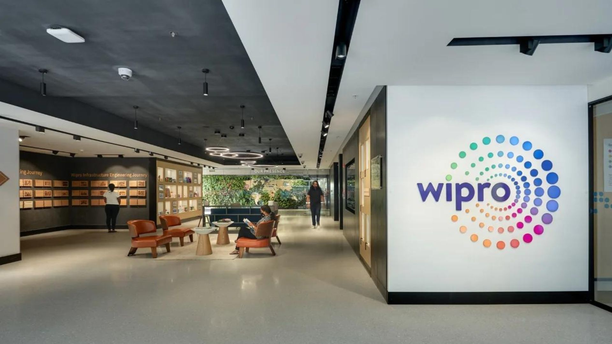
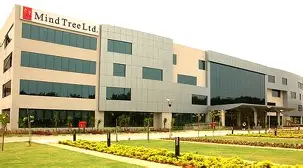

Product-Based Companies

1. Flipkart
Industry:E-commerce Technology
Founded:2007
Headquarters:Banglore, Karnataka, India
Overview
Flipkart is one of India's largest e-commerce platforms, building consumer-facing shopping products along with logistics, payments, and supply chain technology at massive scale. It develops in-house platforms that serve millions of customers and sellers across the country.
Popular Products
- Flipkart Marketplace
- Flipkart Pay Later
- Flipkart Wholesale
- Flipkart Health+
- Flipkart Video
- Flipkart Ads
Technologies
- Java
- JavaScript
- React.js
- Kafka
- AWS
Career Roles
- Software Engineer
- Backend Developer
- Full Stack Developer
- QA Engineer
Why Choose Flipkart?
- One of India's largest and most recognized e-commerce technology companies.
- Builds high-scale consumer products used by millions of customers daily.
- Strong focus on engineering excellence, innovation, and career development.
- Opportunity to work with modern technologies such as distributed systems, cloud computing, and AI.
- Offers a collaborative work environment, competitive benefits, and excellent growth opportunities for software professionals.
Click here to go to Official Website
2. Myntra
Industry:Fashion E-commerce Technology
Founded:2007
Headquarters:Banglore, Karnataka, India
Overview
Myntra is a leading fashion and lifestyle e-commerce platform that builds technology for personalized shopping experiences, styling recommendations, and large-scale order fulfillment. Its engineering teams focus on scalable platforms that serve fashion-forward customers across India.
Popular Products
- Myntra App
- Myntra Studio
- Myntra Fashion Superstar
- Myntra Insider
- M-Now (Quick Commerce)
Technologies
- Java
- JavaScript
- React.js
- Node.js
- MySQL
- Python
- AWS
Career Roles
- Software Engineer
- DevOps Engineer
- Frontend Developer
- Backend Developer
- Full Stack Developer
- QA Engineer
- Data Engineer
Why Choose Myntra?
- Leading fashion e-commerce platform serving millions of customers across India.
- Innovative work culture focused on creativity, design, and technology.
- Excellent learning and career growth opportunities.
- Exposure to modern recommendation systems, cloud technologies, and AI-powered personalization.
- Competitive salary packages and employee-friendly benefits.
Click here to go to Official Website
3. Ola
Industry:Mobility and Technology
Founded:2010
Headquarters:Banglore, Karnataka, India
Overview
Ola is a leading mobility technology company headquartered in Banglore. It builds platforms for ride-hailing, electric vehicles, and financial services, powering real-time matching, mapping, and payments at large scale. Ola serves millions of riders and driver-partners across India, enabling efficient and reliable urban mobility.
Popular Products
- Ola Cabs
- Ola Electric
- Ola Money
- Ola Maps
- Ola Fleet Technologies
- Ola Consumer App
Technologies
- Java
- JavaScript
- React.js
- Node.js
- PostgreSQL
- Python
- AWS
Career Roles
- Software Engineer
- DevOps Engineer
- Frontend Developer
- Backend Developer
- Full Stack Developer
- QA Engineer
- Site Reliability Engineer (SRE)
Why Choose Ola?
- One of India's leading mobility technology companies with a large-scale consumer base.
- Opportunity to work on real-time, geo-distributed systems and electric vehicle technology.
- Collaborative and innovation-driven work environment.
- Exposure to modern technologies, scalable systems, and enterprise software.
- Strong learning culture with excellent career growth opportunities.
Click here to go to Official Website
Service-Based Companies
1. Infosys
Industry:IT Services and Consulting
Founded:1981
Headquarters:Banglore, Karnataka, India
Overview
Infosys provides software development, consulting, cloud computing, AI, and digital transformation services for clients worldwide, with its headquarters and largest campus located in Banglore.
Key Services
- Software Development & Application Services
- IT Consulting
- Cloud Computing Solutions
- Data Analytics & Business Intelligence
- Cybersecurity Services
- Enterprise Application Services
Technologies
- Java
- .NET
- Azure
- SQL
- React
Career Roles
- Software Engineer
- Cloud Engineer
- QA Engineer
Why Choose Infosys?
- One of the world's leading IT services and consulting companies with a strong global presence.
- Provides opportunities to work on diverse client projects across industries such as healthcare, banking, retail, finance, and manufacturing.
- Offers excellent training programs, certifications, and continuous learning opportunities for career growth.
- Exposure to modern technologies including Cloud Computing, Artificial Intelligence, Data Analytics, Cybersecurity, and Digital Engineering.
- Collaborative work environment with global teams, competitive employee benefits, and strong opportunities for fresh graduates and experienced professionals.
Click here to go to Official Website

2. Wipro
Industry:IT Services and Digital Solutions
Founded:1945
Headquarters:Banglore, Karnataka, India
Overview
Wipro is a global IT services and consulting company headquartered in Banglore. The company specializes in software development, cloud transformation, automation, artificial intelligence, data analytics, and business process services. It helps organizations modernize their technology infrastructure and accelerate digital transformation by delivering innovative and customer-focused solutions across various industries.
Key Services
- Application Development & Maintenance
- Artificial Intelligence & Automation
- Cloud Computing Solutions
- Data Analytics & Business Intelligence
- Cybersecurity Services
- Enterprise Application Services
Technologies
- Java
- JavaScript
- .NET
- Spring Boot
- React.js
- Angular
- SQL
- Python
- AWS
Career Roles
- Software Engineer
- Frontend Developer
- Backend Developer
- Full Stack Developer
- DevOps Engineer
- QA Engineer
- Data Engineer
Why Choose Wipro?
- A global IT services company serving clients across multiple industries.
- Excellent learning and upskilling opportunities through training and certifications.
- Exposure to modern technologies such as AI, cloud computing, automation, and data analytics
- Collaborative work environment with opportunities to work on international projects.
- Strong career growth, employee development programs, and competitive benefits
Click here to go to Official Website

3. Mindtree
Industry:IT Services and Digital Solutions
Founded:1999
Headquarters:Banglore, Karnataka, India
Overview
Mindtree is a global IT services and consulting company with a strong presence in Banglore. The company provides software development, cloud computing, application modernization, artificial intelligence, cybersecurity, and business process services. It helps enterprises accelerate digital transformation by delivering innovative technology solutions across industries such as banking, insurance, healthcare, logistics, and retail.
Key Services
- Application Development & Maintenance
- Artificial Intelligence & Automation
- Cloud Computing Solutions
- Data Analytics & Business Intelligence
- Digital Transformation
- Quality Engineering & Testing
Technologies
- Java
- Docker
- .NET
- Spring Boot
- React.js
- Angular
- SQL
- Python
- AWS
Career Roles
- Software Engineer
- Frontend Developer
- Backend Developer
- Full Stack Developer
- DevOps Engineer
- QA Engineer
- Data Engineer
Why Choose Mindtree?
- Global IT services company with clients across banking, insurance, healthcare, and retail industries.
- Excellent opportunities to work on cloud computing, AI, cybersecurity, and digital transformation projects.
- Comprehensive training programs and continuous learning to support career growth.
- Collaborative work environment with exposure to international clients and modern technologies.
- Competitive salary packages, employee benefits, and strong career advancement opportunities.
Click here to go to Official Website